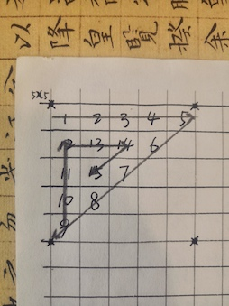
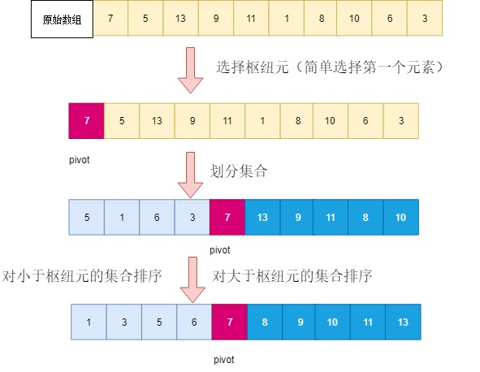

前言
排序是计算机中对存储的数据执行最常见的操作之一。语法简单，却很精妙。在排序算法中绕不开的是循环，只有在深入学习排序算法时，才发现平时不起眼的循环语句不可小觑。
拿最简单的冒泡排序来说，道理我都懂，可为什么会想到两层嵌套的循环语句？为什么两层循环语句的条件会有所不同？两层循环的关联逻辑是什么？循环在冒泡中扮演着什么角色？循环是通过怎样的逻辑完成冒泡的？等等。这些问题的背后，都值得我们去探究。
循环
在说正题之前，需要说一个小插曲。由于互联网寒冬，程序员们都有一种危机感。在这场危机中，程序员的筛选条件也变得更加苛刻。无论是前端还是后端，都最好能够熟悉掌握一些基础算法。所以说，刷算法题，也在程序员间流行起来了。我旁边的一同事，就刷到了一个有趣的算法，说是挺有意思的，就让我也尝试一下。讲真，作为一个前端，除了简单处理一下接口数据，还真没有训练过应试般的算法。
题目大致是这样的，在 n*n 的平面中，以一半的空间螺旋有序排满以1起始若干数字。
画图如下：

随着思考的深入，突然发现，这tm不就是一道数学题么？（原谅我说粗话了）
找出已知，列出未知，关联已知未知，就差列 x、y 了。
以下以 5*5 为例：
1 | var arr = Array.from({length: 5}).map(item => ([])); |
变动的就是未知，找出循环条件，关联已知，这样等式就算列出来了。在这里我把平面想像成平面坐标，m、n 当作 x、y 轴，数组就是坐标点的集合，数字螺旋折转的条件作为循环递归条件，就这样，一个粗糙的算法算是完成了。
虽然这和本次主题的关系不是很大，但是很受启发，让我觉得程序和数学果然存在着紧密的关系。回到这一小节，以最简单的 for 循环为例。
1 | let arr = [1, 2, 3]; |
以上就是最简单的 for 循环写法，从这个简单的 for 语句，我们能够知道的是，第几次循环i（即当前），循环的次数arr.length及循环的驱动i++。很重要的一点就是，i 是随着循环递增的。循环就是这么简单，也没有什么其他魔力。
在排序算法中，还有一点需要注意的，那就是数组。在 JavaScript 中，数组元素在内存中并不是连续的。我们可以通过索引来引用相应位置的元素。更重要的是，我们通常操作数组元素的时候，并不是操作数组元素本身，而是该位置上的变量。我们可以想象成，每一个索引位置都是一个变量，然后通过给变量赋值数组元素。
循环和数组，如果单独使用倒也没什么。如果两者结合，你就会发现，随着循环的次数增加，数组索引也会递增，再结合一些逻辑，就可以把某些元素移动到制定的位置。
那么，都结合怎样的逻辑呢？
冒泡排序
冒泡排序逻辑，通过两两比较，把较大的元素赋值给当前位置索引的后一索引位置，然后随着循环增加，当前索引也会递增，最终会把最大值推到末尾。然后把这个过程循环多次，最终把倒数第二大、倒数第三大…移到指定位置。

1 | function bubbleSort(arr){ |
选择排序
选择排序逻辑，比较当前数组元素，找出最小元素的索引，将该位置的元素移动指定位置。然后多次循环遍历，最终将剩下数组元素中第二小元素、第三小元素…移到指定位置。

1 | function selectionSort(arr){ |
插入排序
插入排序逻辑，将当前的数组元素与之前的数组元素比较，并将其插入到适当位置。

1 | function insertionSort(arr){ |
希尔排序
希尔排序算是插入排序的升级版本，插入排序是与之前的数组元素挨个进行比较，而希尔排序是以特定间隔进行多次分组比较，所以说在代码上很相似。

1 | function shellSort(gap, arr){ |
归并排序
归并排序逻辑，使用递归的方式将数组划分为更小的数组对，通过比较重新合成完整的数组。本文采用的是自顶向下的归并排序，还可以使用自底向上的归并排序。

1 | function mergeSort(arr){ |
快速排序
快速排序逻辑，从数组中选出基准值，将大于基准值的元素移到右侧数组，将小于基准值的元素移到左侧数组，递归循环此操作直到数组为空。然后合并各组数组，最终得到排序后的新数组。

1 | function quickSort(arr){ |
over！